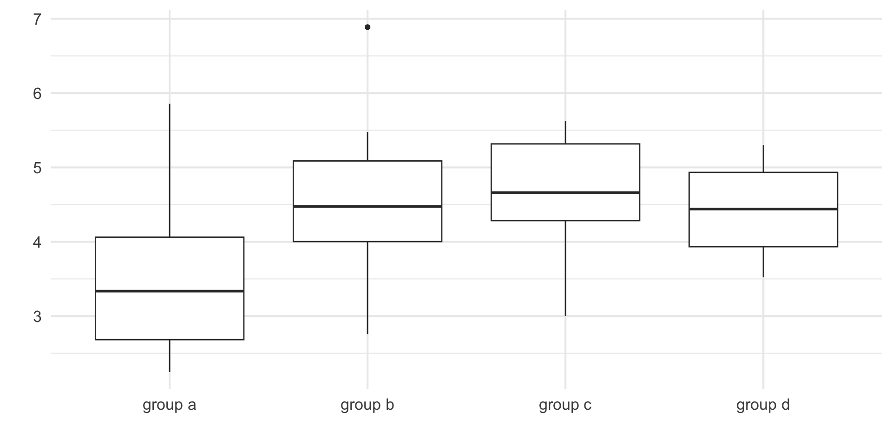
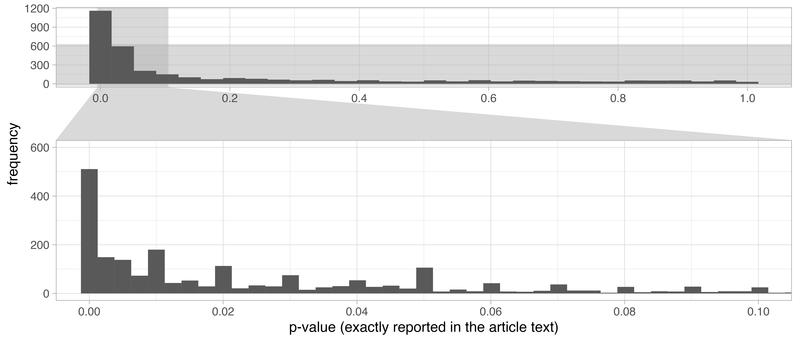

# code from here: https://www.data-to-viz.com/caveat/pie.html
# Libraries
library(tidyverse)
library(hrbrthemes)
library(viridis)
library(patchwork)
# create 3 data frame:
data1 <- data.frame( name=letters[1:5], value=c(17,18,20,22,24) )
data2 <- data.frame( name=letters[1:5], value=c(20,18,21,20,20) )
data3 <- data.frame( name=letters[1:5], value=c(24,23,21,19,18) )
# Plot
plot_pie <- function(data, vec){
ggplot(data, aes(x="",
y=value,
fill=name)) +
geom_bar(width = 1, stat = "identity") +
coord_polar("y", start=0, direction = -1) +
scale_fill_viridis(discrete = TRUE, direction=-1) +
geom_text(aes(y = vec,
label = rev(name),
size=4,
color=c( "white", rep("black", 4)))) +
scale_color_manual(values=c("black", "white")) +
theme_minimal() +
theme(
legend.position="none",
plot.title = element_text(size=14),
panel.grid = element_blank(),
axis.text = element_blank(),
axis.ticks = element_blank(),
legend.margin=unit(0, "null")
) +
xlab("") +
ylab("")
}
a <- plot_pie(data1, c(10,35,55,75,93))
b <- plot_pie(data2, c(10,35,53,75,93))
c <- plot_pie(data3, c(10,29,50,75,93))
a + b + cEffective Archaeological Science: How can we best communicate our quantitative research to help others?
Code and data online at github.com/benmarwick/arcas-workshop-good-stat-practice
Ben Marwick
Outline
- Displaying data through effective visualization
- Sound reporting of statistical significance tests
- Research compendia for comprehensive communication
Page, S. E. (2018). The model thinker: What you need to know to make data work for you. Basic Books.
Displaying data through effective visualization
Displaying data through effective visualization
- Purge pie charts (from your work)
- Bar bar charts (for continuous data)
- Dots for data (operative overplotting)
Let’s try to compare: what’s the highest value in each pie, and what’s the order of the categories in each pie
Displaying data through effective visualization: Purge pie charts (from your work)
Now, let’s represent exactly the same data using a barplot:
# code from here: https://www.data-to-viz.com/caveat/pie.html
# A function to make barplots
plot_bar <- function(data){
ggplot(data, aes(x=name, y=value, fill=name)) +
geom_bar( stat = "identity") +
scale_fill_viridis(discrete = TRUE, direction=-1) +
scale_color_manual(values=c("black", "white")) +
theme_ipsum() +
theme(
legend.position="none",
plot.title = element_text(size=14),
panel.grid = element_blank(),
) +
ylim(0,25) +
xlab("") +
ylab("")
}
# Make 3 barplots
a <- plot_bar(data1)
b <- plot_bar(data2)
c <- plot_bar(data3)Displaying data through effective visualization: Purge pie charts (from your work)
Purge pie charts because…
Heer, J., & Bostock, M. (2010, April). Crowdsourcing graphical perception: using mechanical turk to assess visualization design. In Proceedings of the SIGCHI conference on human factors in computing systems (pp. 203-212).
Purge pie charts because…

Healy, Kieran. 2018. Data Visualization: A Practical Introduction. Princeton University Press. https://socviz.co/
Bar bar charts (for continuous data)
library(tidyverse)
library(ggbeeswarm)
library(here)
plot_data <-
list.files(path = "../data",
full.names = TRUE,
pattern = "plot-data") %>%
map(read_csv) %>%
list_rbind(names_to = "id") %>%
mutate(x = as_factor(round(x, 0.1))) %>%
mutate(id = case_when(
id == 1 ~ "bimodal",
id == 2 ~ "outlier",
id == 3 ~ "symmetric",
id == 4 ~ "unequal n",
))
plot_data_and_stats_dynamite <-
ggplot(plot_data) +
aes(x, y ) +
stat_summary(fun.y = mean,
geom = 'bar',
fill = "grey40",
size = 6) +
stat_summary(fun.data = mean_cl_normal,
geom = 'errorbar',
colour = "grey40",
width = 0.3,
size = 1.1) +
facet_wrap( ~ id, nrow = 1) +
theme_minimal(base_size = 14)
# statistical text
plot_data_stat_test <-
plot_data %>%
nest(data = -id) %>%
mutate(t_test = map(data, ~t.test(y ~ x, .x) %>%
broom::tidy()
)) %>%
unnest(t_test)
# join stat test to data to show on plots
plot_data_and_stats <-
left_join(plot_data,
plot_data_stat_test) %>%
mutate(id1 = paste0(id, " (p = ", round(p.value, 3), ")"))
# plot
plot_data_and_stats_beeswarm <-
ggplot(plot_data_and_stats) +
aes(x,
y) +
geom_beeswarm(cex = 10,
size = 3,
alpha = 0.4) +
facet_wrap( ~ id1, nrow = 1) +
xlab("") +
ylab("") +
theme_minimal(base_size = 14)Displaying data through effective visualization: Bar bar charts (for continuous data)
Data are hidden behind bars
Displaying data through effective visualization: Bar bar charts (for continuous data)
Another example
# from https://jimgrange.wordpress.com/2016/06/15/solution-to-barbarplots-in-r/
#-------------------------
# load required packages
library(ggplot2)
library(dplyr)
#--- Generate artificial data
# set random seed so example is reproducible
set.seed(100)
# generate condition A
condition <- rep("A", 100)
dv_A <- rnorm(100, 200, 60)
condition_A <- data.frame(condition, dv = dv_A)
# generate condition B
condition <- rep("B", 100)
dv_B <- c(rnorm(50, 130, 10), rnorm(50, 270, 10))
condition_B <- data.frame(condition, dv = dv_B)
# put all in one data frame
raw_data <- rbind(condition_A, condition_B)
# calculate sumary statistics
data_summary <- raw_data %>%
group_by(condition) %>%
summarise(mean = mean(dv),
median = median(dv),
se = (sd(dv)) / sqrt(length(dv)))
#-----------------
#-----------------
#--- Do the "combined" bar plot
p2 <- ggplot()
# first draw the bar plot
p2 <- p2 + geom_bar(data = data_summary,
aes(y = mean,
x = condition),
fill = "grey40",
stat="identity",
width=0.4)
# draw the error bars on the plot
p2 <- p2 + geom_errorbar(data = data_summary,
aes(y = mean,
x = condition,
ymin = mean - se,
ymax = mean + se),
stat = "identity",
colour = "grey40",
width = 0.1, linewidth = 1)
# now draw the points on the plot
p2 <- p2 + geom_point(data = raw_data,
aes(y = dv, x = condition),
size = 4,
alpha = 0.3,
position = position_jitter(width = 0.3, height = 0.1))
# scale and rename the axes, and make font size a bit bigger
p2 <- p2 + coord_cartesian(ylim = c(50, 400))
p2 <- p2 + scale_x_discrete(name = "Category") +
scale_y_continuous(name = "Exciting variable")
p2 <- p2 +
theme_minimal(base_size = 16) +
xlab("") +
ylab("") Displaying data through effective visualization: Bar bar charts (for continuous data)
Bar bar charts because…
- They hide the real distribution of data
- They hide the sample size
- Many different data distributions lead to the same bar
Displaying data through effective visualization: Bar bar charts (for continuous data)
Bar bar charts: what to do instead?
- geom_quasirandom from the ggbeeswarm package
- geom_sina from the ggforce package
- geom_pointgrid from the ggpointgrid package
- geom_dotplot from the ggplot2 package
Displaying data through effective visualization: Bar bar charts (for continuous data)
Dots for data (operative overplotting)
# How to make informative dot plots, box plots and violin plots in R
# Nico Riedel, Robert Schulz, Tracey Weissgerber
# OSF: https://osf.io/wx2dz/
#dataset
set.seed(5)
data_1 = tibble(group = 'group a', data_col = fGarch::rsnorm(50, mean = 3.5, sd = 1, xi = 10))
data_2 = tibble(group = 'group b', data_col = rnorm(15, mean = 4.5, sd = 1.0))
data_3 = tibble(group = 'group c', data_col = rnorm(20, mean = 4.6, sd = 0.8))
data_4 = tibble(group = 'group d', data_col = rnorm(4, mean = 4, sd = 0.5))
data <- rbind(data_1, data_2, data_3, data_4)
data$group <- as_factor(data$group)
# Box plot only
box_plot_simple <-
ggplot(data, aes(x = group, y = data_col)) +
geom_boxplot() +
theme_minimal(base_size = 16) +
xlab("") +
ylab("") 
This is a slight improvement
Displaying data through effective visualization: Dots for data (operative overplotting)
Getting better
Displaying data through effective visualization: Dots for data (operative overplotting)
This is highly effective
Displaying data through effective visualization: Dots for data (operative overplotting)
Sound reporting of statistical significance tests
Sound reporting of statistical significance tests
- Statistical significance tests guide us in making decisions about our claims
- p-values were designed to help us identify surprising results from a noisy data generation process (aka the real world).
- p-values do not quantify the probability that a hypothesis is true.
- A p-value is the probability of the observed data, or more extreme data, under the assumption that the null hypothesis is true.
- Effective inference from p-values requires full reporting and transparency.
Do archaeologists engage in questionable research practices?
- HARKing: Hypothesizing After the Results are Known: presenting ad hoc and/or unexpected findings as though they had been predicted all along; and presenting exploratory work as though it was confirmatory hypothesis testing
- Cherry picking: failing to report dependent or response variables or relationships that did not reach statistical significance or other threshold
- p-hacking: checking the statistical significance of results before deciding whether to collect more data; deciding whether to exclude data points only after checking the impact on statistical significance and not reporting the impact of the data exclusion; adjusting statistical models, for instance by including or excluding covariates based on the resulting strength of the main effect of interest; and rounding of a p value to meet a statistical significance threshold (e.g., presenting 0.053 as p < .05).
Fraser H, Parker T, Nakagawa S, Barnett A, Fidler F (2018) Questionable research practices in ecology and evolution. PLOS ONE 13(7): e0200303. https://doi.org/10.1371/journal.pone.0200303
Detecting QRPs: Evidence from 5000 articles from the Journal of Archaeological Science
- Downloaded the full text of 5000 journal articles
- Extracted from the full text all p-values
- Examined the distribution of p-values around thresholds (e.g. 0.05) for p-hacking
- Used the caliper test to compared the number of observations just below and just above the significance threshold
Strong evidence for publication bias
Sound reporting of statistical significance tests: Evidence from 5000 articles from the Journal of Archaeological Science
Caliper test indicates a bump in p-values just below the threshold of 0.05: p-hacking is occurring
Sound reporting of statistical significance tests: Evidence from 5000 articles from the Journal of Archaeological Science
How prevalent are errors in reporting statistical significance tests in archaeology?
- Downloaded the full text of 3000 archaeology articles from PLOS One
- Used the statcheck R package to extract statistical results from the full text and recalculate p-values based on reported test statistics and their degrees of freedom
- Compared the reported and recalculated p-values
- Identified minor inconsistencies (differences between reported and recalculated p-values) and gross inconsistencies (where the recalculated p-value changed the statistical conclusion, assuming α = 0.05)
Baker, M. Stat-checking software stirs up psychology. Nature 540, 151–152 (2016). https://doi.org/10.1038/540151a
Found 148 APA-formatted statistical tests, 88 with minor inconsistencies (in 34 articles) and 28 gross inconsistencies (in 10 articles)

Sound reporting of statistical significance tests: Evidence from 3000 articles from PLOS One
This article had several gross inconsistencies
Sound reporting of statistical significance tests: Evidence from 3000 articles from PLOS One
The lead author has some important recommendations to help us avoid this
Sound reporting of statistical significance tests: Evidence from 5000 articles from PLOS One
Sound reporting of statistical significance tests: how to minmise reporting errors?
Sound reporting of statistical significance tests
Sound reporting of statistical significance tests: how to minmise reporting errors?
Sound reporting of statistical significance tests
Tools to help
- Read ‘APA formatting for free’ in Just Enough R by Ben Whalley
- Use auto-formatting functions in R packages APAstats, apa, and papaja
- Write your articles in Quarto using Markdown or LaTeX to take full advantage of the auto-formatting functions